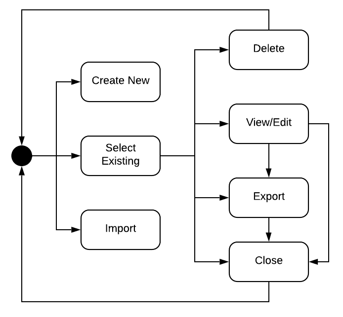
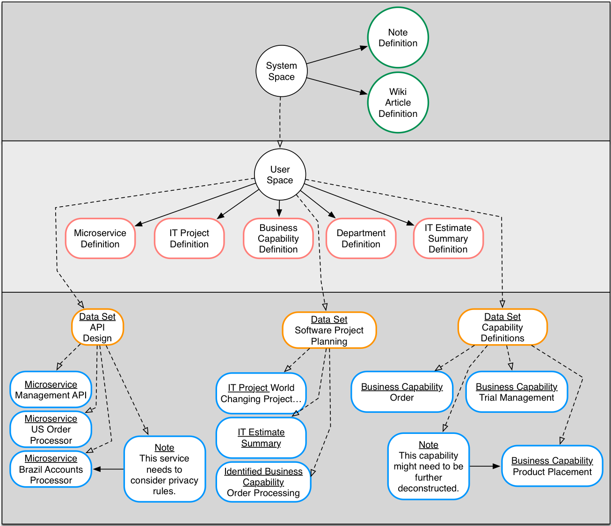

Data Spaces
The data model is partition into multiple spaces based on intended use. They are: System Space, User Space, Data Sets
System Space
The system space is designated for Element Definitions that are provided out of the box by the application. They can be used by the user but not redefined.
User Space
The user space is composed of all Data Sets and Element Definitions defined by a user.
Data Sets
A data set is a collection of Element Definitions and Elements specified by a user. They are analogous to a workspace. Elements created in a data set are not available in another. They provide top level partitioning of elements for the user.
The Data Set Life Cycle
While the System Space and User Space cannot be directly manipulated by the user, data sets can. They have a full life cycle in which users can create and manage multiple data sets. The image below provides insight into the possible data set life cycle. 
New data sets are provisioned by either creating a new empty one or importing an existing one. A user could import a data set they received from another person or as a restore from an earlier export. Once a data set exists, a user can select it. After it is selected the user can choose to edit it, view it, export a copy of it or even delete it.
Data Spaces Example
It is easier to understand the design intention of the data spaces with an example. Lynn is a user that designs IT systems. Imagine that Lynn is using Insights to help think through the work that will be required to build an IT system.
She starts by identifying the different data types she needs for defining her system. She creates Element Definitions for each of the data types. These definitions are stored in her user space. They can be used to create new Elements in all the data sets she creates.
Lynn knows her system is going to need multiple APIs. To help think through this she creates a new data set called API Design. She also thinks that she's going to do some high level project planning and requirements capture so she creates two more data sets: Software Project Planning and Capability Definitions.
Now as Lynn starts to work on her design she hops from data set to data set creating and editing elements related to the overall data set topic. Each Element is an instance of an element definition she created earlier.
If she decides to add a note about one of her elements she can leverage the out of the box Note Element Definition that is defined in the system space.
How the system treats Lynn's data is shown below. 